Historia wersji
Nowe wersje pojawiają się najpierw na kanale ClipSD na Telegramie (otworzy się w nowej karcie).
Wersja 1.34.2
wydana
- Z telefonu. Na panelu zaznaczania pojawił się kafelek „Z telefonu”, a w edytorze, u góry okna, przycisk „Z telefonu”: zrób zdjęcie aparatem telefonu albo wyślij z niego obraz. Z edytora zdjęcie trafia od razu do otwartego zrzutu jako osobny obraz: można je przesuwać i ciągnąć za rogi, „Cofnij” je usuwa.
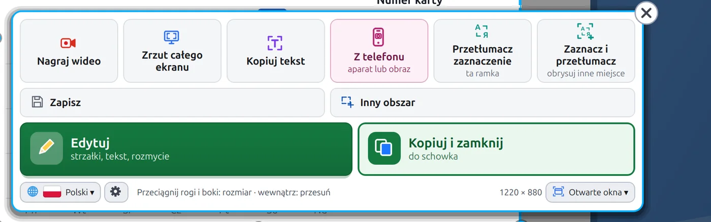
- Z telefonu. Zrobione zdjęcie można obejrzeć na telefonie przed wysłaniem: dotknij go, a otworzy się na cały ekran. Powiększanie dwoma palcami lub podwójnym dotknięciem, zamykanie krzyżykiem albo przyciskiem „Wstecz”.

- Kształt zrzutu. W edytorze obok „Wstaw obraz” jest nowy przycisk „Kształt zrzutu”: zaokrąglone rogi (małe, średnie, duże albo własny promień), owal lub koło. Koło można przesunąć myszą. W PNG i w schowku poza kształtem jest przezroczyście, w JPG biało. W wąskim oknie kształty są w menu „Wszystkie narzędzia”.
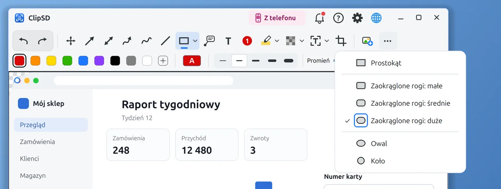
- Otwarte okna. „Otwarte okna ▾”: zrzut okna. Na liście przy każdym oknie są ikona i nazwa programu: od razu widać, gdzie przeglądarka, a gdzie dokument.
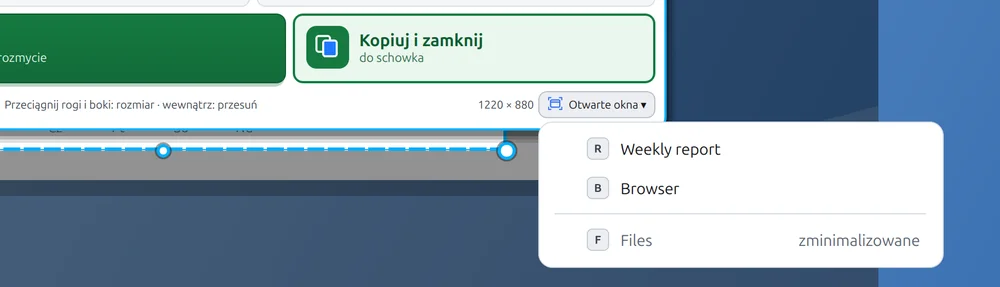
- Panel zaznaczania. Nowa dolna część: główny zielony przycisk „Edytuj” (strzałki, tekst, rozmycie), obok jasnozielony „Kopiuj i zamknij”. Nad nimi „Zapisz” i „Inny obszar”, tak teraz nazywa się „Zaznacz ponownie”. Język i ustawienia przeniesiono do lewego dolnego rogu.
- Panel zaznaczania. „Zapisz” nie zamyka już okna zaznaczania: zrzut jest zapisany, ramka zostaje na miejscu, a na dole widać nazwę pliku. Potem zrzut można jeszcze skopiować albo otworzyć w edytorze.
- Edytor. Okno „Zrzut nie jest zapisany” czyta się łatwiej: duży ciemny tekst i jasne przyciski „Kopiuj i zamknij”, „Zapisz” i „Zamknij bez zapisywania”. Esc wraca do edycji.
- Numery. Gdy wybierzesz dla numeru inny kolor, przy palecie widać podpowiedź w rodzaju „Ten kolor: numeracja od 1”: każdy kolor liczy osobno.
- Nowości w wersji. Po aktualizacji krótkie okno „Nowości w wersji” pokazuje najważniejsze, a nowe przyciski mają etykietę „Nowe”, dopóki ich nie naciśniesz. Okno otworzysz ponownie pozycją „Co nowego” w menu ikony. Wyłącza się w ustawieniach, sekcja „Aktualizacje”.
- Tłumaczenie w edytorze. Wszystkie przyciski tłumaczenia są teraz w jednym wierszu u góry: język, „Tłumaczenie” i „Oryginał”, „⋯” z wyborem widoku („W karcie” lub „Na tekście”), „Kopiuj tłumaczenie” i „Gotowe”. Dolnego paska już nie ma, w wąskim oknie nic się nie ucina.
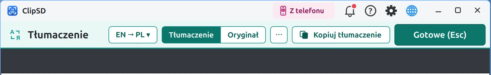
- Tłumaczenie w edytorze. Jeśli ramka przecięła wiersz, sama dociąga się do całego wiersza: w tłumaczeniu nie ma śmieci ani luk. Przetłumaczony tekst nie jest już ucinany na szerokość.
- Tłumaczenie w edytorze. Jeśli zmienisz język w trakcie tłumaczenia, tekst zostanie przetłumaczony od nowa na wybrany język. „Kopiuj tłumaczenie” nie kopiuje już nieaktualnego tłumaczenia.
- Tłumaczenie w edytorze. Błąd tłumaczenia pokazuje się jako jedna karta z przyciskiem „Spróbuj ponownie”, a w górnym wierszu pojawia się żółta ikona. Wiersz działa też z klawiatury: Tab przechodzi między przyciskami, Enter naciska przycisk, Esc zamyka menu „⋯”.
- Numery. Każdy kolor ma teraz własną numerację: czerwone liczą się osobno od niebieskich. Kwadracik przy nowym numerze już nie zasłania cyfry.
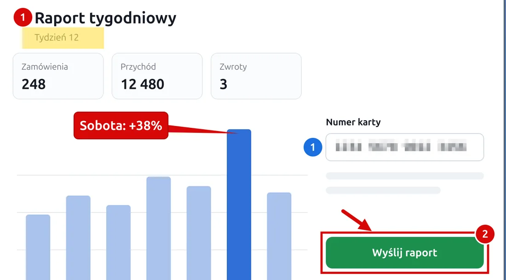
- Zrzut okna. Na dole panelu zaznaczania pojawił się przycisk „Otwarte okna ▾”, a na klawiaturze klawisz W. Wybierz okno, a ramka stanie dokładnie na nim. W GNOME i Windows okno zasłonięte przez inne jest zrzucane w całości. Zminimalizowanych okien nie można wybrać.
- Zrzut okna. W GNOME lista okien wymaga zaktualizowanego rozszerzenia ClipSD: naciśnij „Aktualizuj”, potem wyloguj się i zaloguj ponownie.
- Zrzut/zdjęcie z telefonu. W menu ikony i w „Wstaw obraz” w edytorze jest nowa pozycja „Zrzut/zdjęcie z telefonu”. Pokaż kod na komputerze, skieruj na niego aparat telefonu z tej samej sieci Wi-Fi i rób zdjęcia: aplikacji instalować nie trzeba. Zdjęcie idzie od razu, a przyciski na telefonie są duże. Zdjęcie otwiera się w edytorze i wychodzi na pierwszy plan.
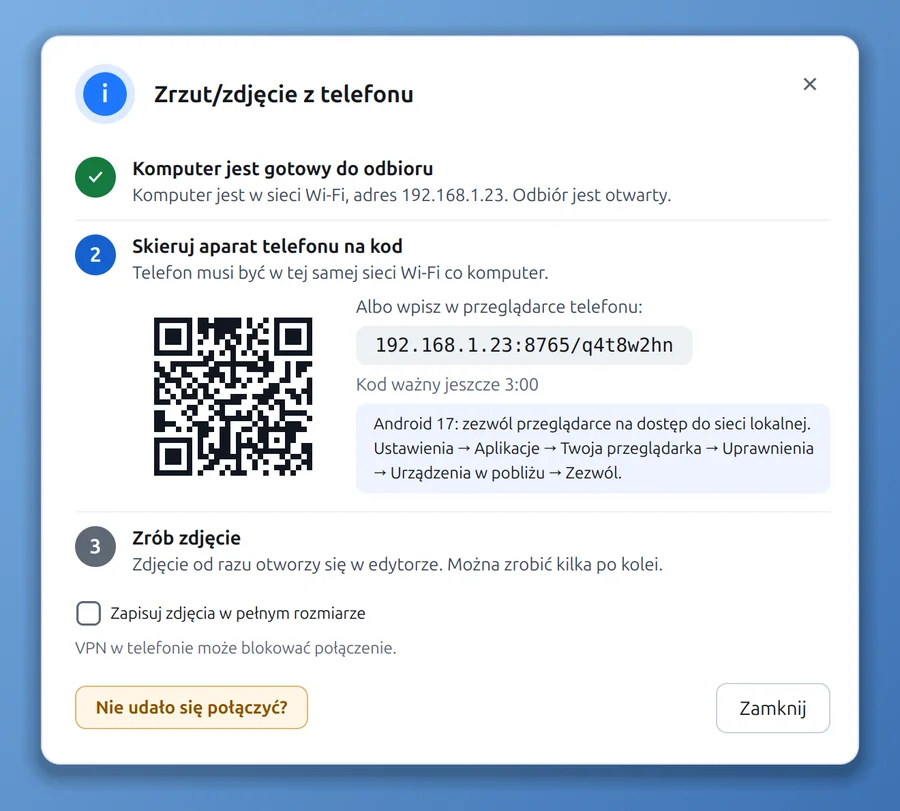
- Zrzut/zdjęcie z telefonu. Domyślnie zdjęcie jest zmniejszane do ekranu komputera. Aby zapisać je w pełnym rozmiarze, zaznacz „Zapisuj zdjęcia w pełnym rozmiarze”. Działa tylko w sieci domowej (prywatnej).
- Zrzut/zdjęcie z telefonu. Jeśli telefon się nie łączy, okno podpowiada po kolei, co sprawdzić: VPN na telefonie, tę samą sieć Wi-Fi, zgodę przeglądarki na „Urządzenia w pobliżu” w Androidzie 17 i zaporę komputera (przycisk „Zezwól”).
- Windows. Rosyjski tekst z obrazka nie zamienia się już w łacińskie litery. Jeśli w Windows nie ma rozpoznawania rosyjskiego tekstu, program proponuje je zainstalować przyciskiem „Zainstaluj rozpoznawanie”.
- Windows. Bezpieczeństwo: rozpoznawanie tekstu instaluje się teraz bezpośrednio programem Windows DISM, bez PowerShell, a zanim Windows poprosi o zgodę, program mówi, dla którego programu Microsoft pojawi się prośba (DISM lub Windows PowerShell): to normalne, kliknij „Tak”.


Wersja 1.32.3
wydana
- Program nie zamyka się już sam, gdy zamkniesz edytor zaraz po „Kopiuj tekst” albo zaraz po otwarciu zamkniesz pierwszy zrzut po instalacji.
- Aktualizacje. Esc lub krzyżyk w oknie pobierania tylko chowają okno, pobieranie trwa dalej; wcześniej program się zamykał. „Spróbuj ponownie” w oknie błędu nie zaczyna już drugiego pobierania, gdy jedno trwa.
- Aktualizacje. Zrzut skopiowany tuż przed ponownym uruchomieniem dla aktualizacji nie znika już ze schowka: po „Kopiuj i zamknij” albo skopiowaniu w trakcie pobierania program czeka do 2 minut, żebyś zdążył go wkleić, i dopiero potem uruchamia się ponownie.
- Aktualizacje. Okno błędu i „Co nowego” nie pojawiają się już nad oknem zaznaczania ani edytorem: pojawiają się minutę po tym, jak skończysz. Jeśli program wcześniej się zamknie, okno błędu pojawi się przy następnym uruchomieniu.
- Aktualizacje. „Sprawdź aktualizacje” odpowiada oknem także wtedy, gdy program akurat sam sprawdza aktualizacje. Jeśli okno błędu aktualizacji jest otwarte, przycisk wysuwa je na wierzch.
- Linux. Alt+W w trakcie instalowania aktualizacji nie psuje już aktualizacji.
- Dwa uruchomienia niemal jednocześnie, na przykład podwójne kliknięcie ikony, nie dają już dwóch kopii programu z dwiema ikonami.
- Kliknięcie ikony zawsze otwiera zaznaczanie: okno oceny ani propozycja aktualizacji nie pojawiają się już zamiast niego.
- Jeśli skrót klawiszowy do zrzutu jest zajęty przez inny program, komunikat o tym już nie ginie (Windows i Linux poza GNOME): wcześniej skrót po prostu po cichu nie działał.
- Dwa zrzuty zapisane w tej samej sekundzie nie nadpisują się już nawzajem: drugi plik dostaje w nazwie _2.
- Tłumaczenie fragmentami. Licznik pozostałych znaków nie rozjeżdża się już, gdy tłumaczy się kilka fragmentów naraz. Komunikat o błędzie na małym fragmencie widać w całości. Jeśli zmienisz język dokładnie pod koniec tłumaczenia, komunikat, że nie znaleziono tekstu, nie jest już pokazywany jako błąd.
Wersja 1.32.2
wydana
- Tłumaczenie fragmentami. Przyciski okna tłumaczenia ustawiają się w wolnym miejscu i nie zasłaniają przetłumaczonego tekstu ani sąsiednich okien. Nowy fragment nie trafia na okno, które jest już otwarte. Jeśli brakuje miejsca na przyciski, w rogu okna zostaje krzyżyk, a przyciski pojawiają się po najechaniu na nie myszą.
- Tłumaczenie całego ekranu. Krótkie wiersze, na przykład tytuł karty i adres, zostają w jednej linii.
- Przycisk „Kopiuj tekst”. Na średnich zrzutach duży przycisk jest widoczny dłużej: jako pierwszy znika „Przetłumacz wszystko”.
Wersja 1.32.1
wydana
- Ponawianie w edytorze. Ctrl+Y znów ponawia cofniętą czynność: w Windows skrót nie działał. Działa też Ctrl+Shift+Z.
- Ocena ClipSD. Okno po wysłaniu nie zatrzymuje się już na „Wysyłanie oceny…”, gdy ocena już dotarła. Jeśli podczas oceniania naciśniesz Alt+W, wpisana opinia nie przepadnie: wróci, gdy znów otworzysz okno oceny.
- Pilna aktualizacja. Jeśli okno „Pilna aktualizacja ClipSD” zamknęło się z powodu zrzutu (Alt+W), pojawi się znowu, gdy skończysz ze zrzutem, a nie po dobie.
- Kolor zaznaczonego obiektu. Kolor i grubość zaznaczonego obiektu zmieniają się tylko w nim. Pod paletą pojawia się podpowiedź: przycisk „Rysuj dalej tym kolorem” zachowuje nowy kolor także dla kolejnych linii.
- Własne kolory. Kolory wybrane przez „+” zapamiętują się jako próbki przed przyciskiem „+”. Próbek jest do trzech, a prawy przycisk myszy usuwa próbkę.
- Zakreślacz i ołówek. Jeśli zaczniesz linię tuż przy brzegu poprzedniej, rysuje się nowa linia, a poprzednia się nie przesuwa.
Wersja 1.32.0
wydana
- Nowy edytor. Narzędzia są zebrane w grupy (strzałki i linie, kształty, napisy, rysowanie i inne). Przycisk „Wszystkie narzędzia” pokazuje je wszystkie naraz, razem z klawiszami. Przy wąskim zrzucie okno edytora też jest wąskie: grupy się zwijają, a wszystkie narzędzia są pod ręką.
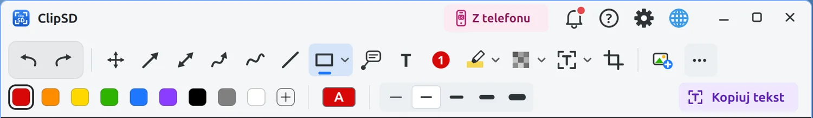
- Menu prawego przycisku. Menu zaznaczonego obiektu nie zasłania już jego ramki i uchwytów: otwiera się obok obiektu.
- Dzwonek powiadomień. W edytorze pojawił się dzwonek „Powiadomienia”: nowa wersja z przyciskiem „Aktualizuj”, nowości w zainstalowanej wersji i krótkie komunikaty programu. O nowej wersji najpierw informuje dzwonek, a okno z propozycją aktualizacji pojawi się później, jeśli do tego czasu nie zaktualizujesz programu sam.
- Przewodnik po oknie zaznaczania. Przy pierwszym zrzucie okno krok po kroku pokazuje, co robią przyciski panelu. Można go powtórzyć z menu ikony przy zegarze: „Przewodnik po oknie zaznaczania”.
- Przy nazwach języków są teraz flagi. Język wybrany w ustawieniach zmienia się od razu, bez zamykania okna.
- Ustawienia podzielono na sekcje. Lista po lewej (Ogólne, Zrzut, Edytor, Tekst i tłumaczenie, Aktualizacje, O programie), nad nią wyszukiwanie. Okno pamięta, która sekcja była otwarta.
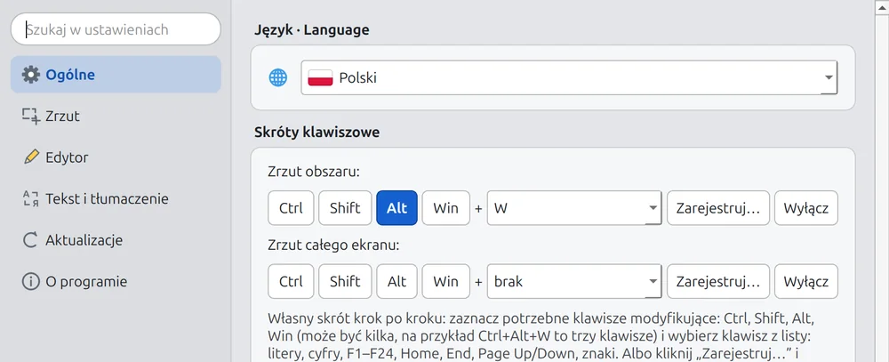
- Ocena ClipSD. ClipSD można ocenić od 1 do 5 gwiazdek i zostawić opinię: menu ikony lub „?” w edytorze, „Oceń ClipSD”. Czasem program sam zaproponuje ocenę, ale tylko wtedy, gdy nie robisz zrzutu i nie pracujesz w edytorze.
- Ostrzejsze zrzuty na ekranach ze skalowaniem. Na ekranach ze skalowaniem (125%, 150%, 200%) zrzuty są ostrzejsze: edytor pokazuje je bez rozmycia. W Linuksie przeglądarki i dokumenty wklejają je w oryginalnym rozmiarze, bez rozciągania. W ustawieniach, sekcja „Zrzut”, można wybrać „Rozmiar zrzutu”: pełna rozdzielczość albo jak na ekranie.
- Spokojniejszy wygląd okien. Spokojniejszy wygląd i czytelniejszy tekst: napisy i przyciski mają większy kontrast, główny zielony przycisk jest ciemniejszy, a okno edytora domyślnie ma cienką ramkę.
- Okno „O programie”. W oknie „O programie” są teraz warunki użycia nazwy i ikony ClipSD oraz link do aktualności na Telegramie.


Wersja 1.31.2
wydana
- Linux: aktualizacja znów instaluje się sama w nowszych systemach (na przykład Ubuntu 26.04). Wcześniej była pobierana, ale się nie instalowała.
- Linux: w nowszych systemach znów działają rozpoznawanie tekstu, linki i autostart.
- Jeśli aktualizacja się nie zainstaluje, pojawi się okno z przyciskami „Spróbuj ponownie” i „Raport o błędzie”. Raport nie zawiera nazwy użytkownika ani ścieżek do folderów osobistych.
- Po aktualizacji okno „Co nowego” zaczyna się od wiersza „Aktualizacja zainstalowana”.
Wersja 1.31.1
wydana
- W oknie zaznaczania obszaru można od razu zmienić język i otworzyć ustawienia: na dole panelu, po lewej od rozmiaru, jest globus z nazwą języka i zębatka.

- Tłumaczenie podzielono na dwa przyciski: „Przetłumacz zaznaczenie” tłumaczy ramkę, która już stoi, a „Zaznacz i przetłumacz” pozwala obrysować inne miejsce. Tłumaczenie całego ekranu przeniesiono do wiersza trybu tłumaczenia, przycisk „Cały ekran”.

- Panel w oknie zaznaczania jest około 15% bardziej zwarty i staje obok ramki, a nie na niej: pod, nad, z prawej lub z lewej. Do wnętrza ramki wchodzi tylko wtedy, gdy na zewnątrz nie ma miejsca.
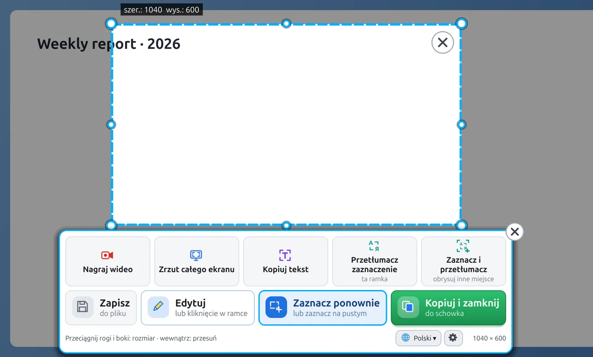
- W ustawieniach jest nowa sekcja „Aktualizacje”: wersja, przycisk „Sprawdź aktualizacje” i pole automatycznego sprawdzania. Przycisk „?” w edytorze otwiera teraz menu: „Przewodnik po programie”, „Sprawdź aktualizacje” i „O programie”.
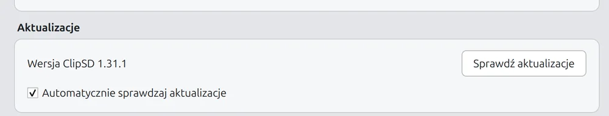
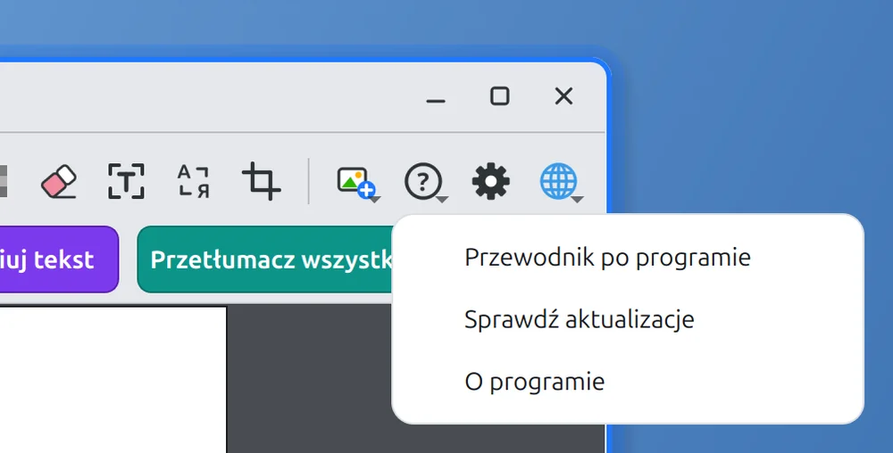
- W edytorze „Cofnij” i „Ponów” stoją na początku rzędu na osobnym tle. Domyślnie narzędzia są ułożone tak: przesuwanie, strzałki obok siebie, potem kształty, potem reszta. Kolejność ustawiona przez Ciebie się nie zmienia.

- Ikona globusa jest wszędzie jasnoniebieska i łatwiej ją znaleźć.
- Linux: naprawiono pierwszą instalację, która wcześniej mogła po cichu zatrzymać się w połowie.


Wersja 1.31.0
wydana
- ClipSD ma 12 języków interfejsu: rosyjskim, angielskim, bułgarskim, ukraińskim, niemieckim, francuskim, hiszpańskim, włoskim, portugalskim, polskim, tureckim i chińskim. Język zmienia się od razu, bez ponownego uruchamiania: menu ikony przy zegarze, globus w edytorze, pierwszy krok przewodnika albo ustawienia.
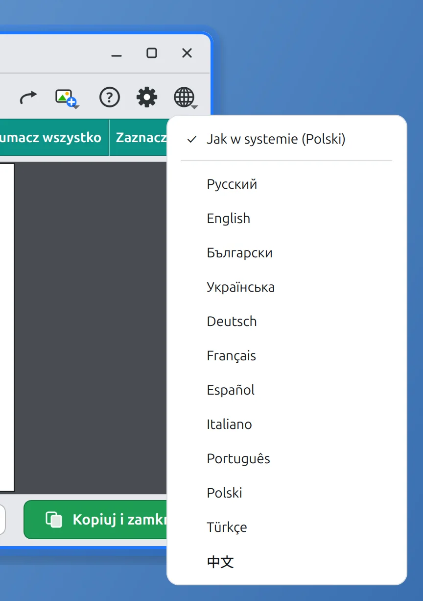
- Nowy panel w oknie zaznaczania: u góry zrzut całego ekranu, nagrywanie wideo, kopiowanie tekstu i tłumaczenie, na dole „Edytuj”, „Zapisz” i „Kopiuj i zamknij”.

- Tłumaczenie kawałek po kawałku: obrysuj fragment, a tłumaczenie zostanie nałożone na tekst; obrysuj następny, a on również zostanie przetłumaczony. Esc kończy tryb.
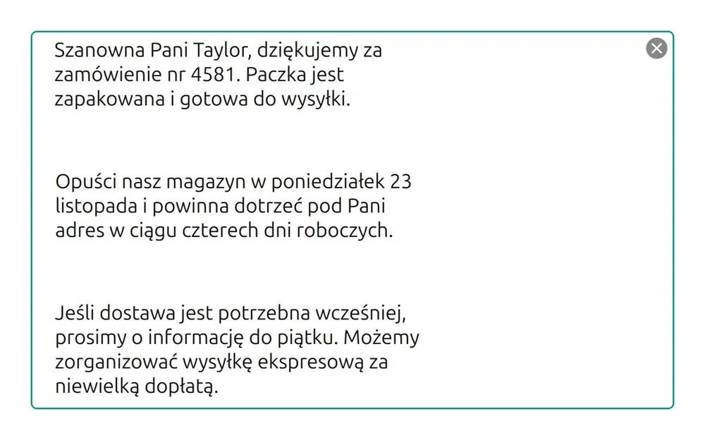
- Tryby edytora „Kopiowanie tekstu”, „Kadrowanie” i „Tłumaczenie” są pokazane na pasku u góry z dużym przyciskiem wyjścia; Esc przywraca poprzednie narzędzie.

- ClipSD aktualizuje się sam. Raz dziennie sprawdza, czy jest nowa wersja, i proponuje „Aktualizuj”, „Później” albo „Pomiń tę wersję”. Aby sprawdzić od razu, wybierz z menu ikony „Sprawdź aktualizacje”. Aktualizacja jest weryfikowana za pomocą podpisu cyfrowego; jeśli nowa wersja się nie uruchomi, zostanie przywrócona poprzednia.